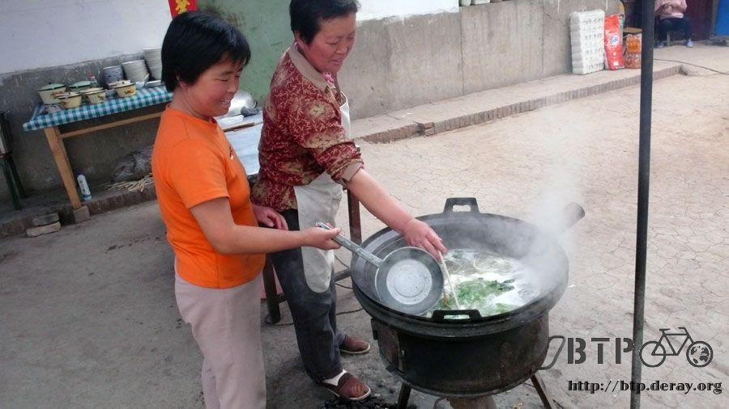
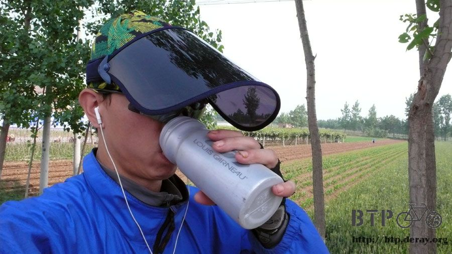
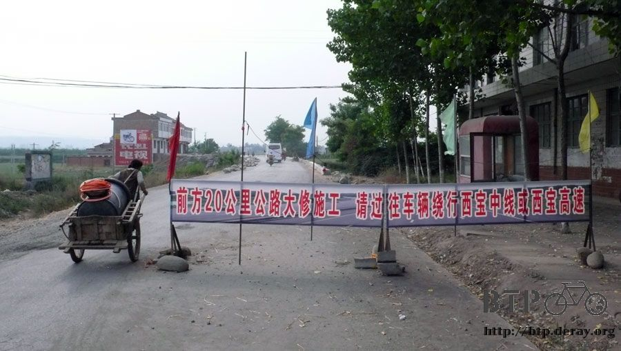
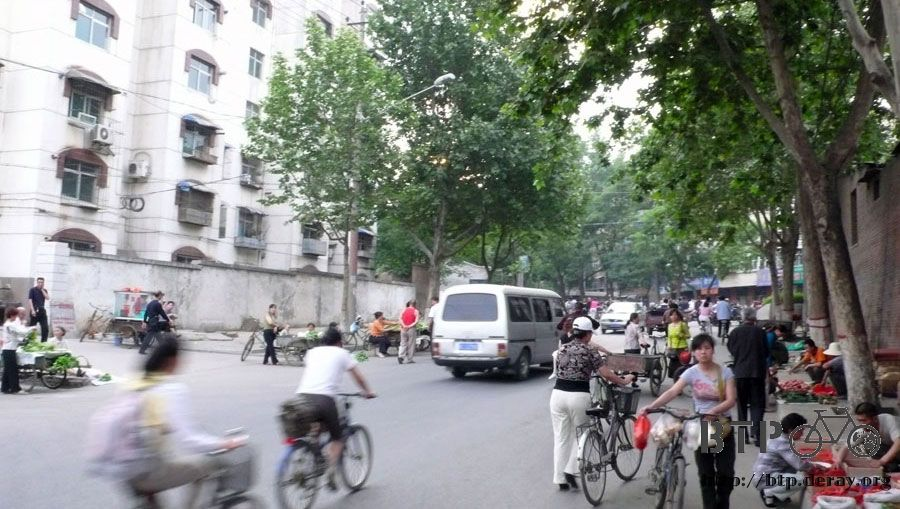

Look at Him! HELLO!
“Beep! Beep! Beep!” My watch’s alarm went off at 5:20 am.
After several days of trial, from waking up, washing up, getting dressed, packing bags, cleaning the room,
checking Dido to loading bags onto Dido, all these activities takes approximately 40 minutes.
My ideal time to depart is 6 o’clock in the morning.
I happily enjoyed the breakfast. It was the crystal cakes I bought at the muslin street yesterday.
The taste was a mixture of sweet and salty, very delicious.
I had to resist the temptation to eat the crystal cakes since I bought them yesterday.
I had to wait until getting on the bike and this made me want to start the trip as soon as possible.
Before I left Xi’an, I stopped by the train station to take a picture.
I don’t know whether it was too early in the morning or the fact that the Labor Day week was over,
there weren’t that many people at the train station.
Two days ago, here was packed with people and I had to avoid coming in this direction so I wouldn’t get stuck here.
In order to leave Xi’an and head toward Boaji, I need to get on 310 national expressway.
I went to the starting point of the Silk Road, where the statue was located, and thought I could find 310 national expressway there, but I ended up in Xianyang.
So I went around in cycles again and made a turn heading toward south. I probably rode another extra 10 km or so.
Today was a suitable day to ride bike. There was no rain. There were thick clouds in the sky so the sun ray wasn’t too strong.
Even the wind stopped blowing against me.
Today’s goal was to ride from Xi’an to Boaji in one day. When I looked at the map, I realized this was very far.
It probably was about 180 km.
Why did I plan this aggressive schedule to get to Baoji from Xi’an in one day?
At the end, I rode for 12 hours and more than 200 km in one day. I really did get to Baoji from Xi’an in one day.
After I found a place to stay over night and opened my laptop to check the schedule.
I realized I planned this trip for 2 days. Daaaaa!
Fortunately it was an easy ride today. Now I got an extra day. Later when I find a place I like, I can spend one extra day there.
At noon, I arrived at a place called Zhouzhi County (here is the original destination for today);I had lunch at a small restaurant.
There were many dishes written on the board. But whatever I ordered, they were out.
Finally I asked them what they would recommend.
Then the two boss ladies made a bowl of hand-stretched noodle with sesame sauce together.
Freshly made from the dough and then stretched it until it became wide and thin like fettuccini.
Cooked with vegetables and topped with meat sauce and it’s done.

There were no water nor tea served at the restaurant. One of boss ladies brought me a scoop of noodle water.
The color of noodle water was in shade of green probably because it was cooked with vegetables.
“People here all eat noodles and drink noodle water,” she said.
When in Rome, do as the Romans do. The noodles were very delicious.
The noodle water just like noodle water. I portended I was drinking hot water.

After finished noodle and took a break.
I went to the grocery store next door and bought two popsicles.
The boss lady from the noodle place said there were two foreigners bought some popsicles next door, too.
They even took a picture with her.
When I heard that I was wondering if they were the members from B2P who left 2 weeks prior than me.
So I was happily asking the boss lady how long ago was it? Maybe I could catch up with them.
Come to find out, it was back in February. Then it wouldn’t be the people from B2P.
Since it has been a while, God knows where they are right now?
This is my new equipment. I bought it with 5 RMB in Xi’an.
When you lift it up, it is a hat. Pull it down; it can cover my whole face.
Whether they are bugs or western exposure sun, my face will be protected.
When I wear this hat, because of the reflection, you can not see my face.

While I was wearing this sun hat, I ran into some elementary school students who were out for lunch break.
One of them saw me riding bike and shouted to his classmates. “Look at him!”
Then everyone was looking at me and in shocked for a split second. Then someone started saying hello to me in English.
『HELLO～』『HELLO～』『HELLO～』『HELLO～』『HELLO～』『HELLO～』
『HELLO～』『HELLO～』『HELLO～』『HELLO～』『HELLO～』『HELLO～』
It looked like they thought I was Mr. Bean.
There were nasty bugs everywhere along the road. First, they would try to land on your body and then bite you.
So I have kept on patting down my jacket, pants, head piece and face.
Even though I was wearing clothes, they could still bite through them.
The worst area was the legs. I was wearing every thick tights; they could still bite through them.
Very often I had to stop because my legs were itchy.
I wondered if these bugs are afraid of bug spray. But I didn’t bring any anyway.
Finally I found 310 national expressway after passing Zhouzhi. Now there are 100 km from here to Boaji.
So I rode 100 km this morning, rest a little bit, and I can ride another 100 km in the afternoon.
Because it was a long ride today, so I treated myself with a bottle of soda.
I stopped at a grocery store in the mid way. I went through their refrigerator looking for a bottle of soda.
Finally I found a bottle of Coke and the owner said it was 3 RMB.
I said, is it 2.50 RMB the standard price? Why here is 3 RMB?
If that is the case, then I am going to buy one that is 2.50 RMB.
Which kind of soda is 2.50? I continued to go through the refrigerator.
Then, the owner’s son came out and saw me looking for a drink for 2.50 RMB and said, “Coca Cola is 2.50”
The owner, who offered 3 RMB then portended to be busy and walked away.
You didn’t know one day you would be exposed by your own son?
I took back the change. You want to rip me off. No way!
The road condition of 310 national expressway was generally fair. The road was flat, no up and down hills.
But the repair site was very ridiculous.
The repair site was about 20 km long and the estimated completion time was half year.
While the road was being repaired, it was still opened to public.
It was very chaotic. There were potholes every where. If I wasn’t careful, I could fall into 2 meters deep holes.
Instead saying it was being repaired, it’s better to say they were trying to burry something secretly along this 20 km long road.

When the road condition was better, I could enjoy the country scenery.
There were plenty of wheat plantations. Some of them were planting vegetables or fruit trees.
Then they were goats and chicken running around. The adult goats were eating grass,
baby goats were drinking milk, and chickens were digging dirt. What a leisure country life!

I had to be careful not to get side track too much, otherwise, I would really fall into the potholes and couldn’t get out of them.
Riding along the road and moving forward. At 6:30 pm, I had reached 200 km milestone and arrived Baoji city.
There were many hotels, motels and guest houses. When you find a cheap one, don’t be too thrilled yet.
You have to check the room first to make sure it is clean.
Don’t be too tough on yourself just because you want to save money.

I pay special attention to the owners’ eyes and tones when I asking for prices
Some of them won’t look into your eyes or not telling the price directly.
Those are the ones checking you out to see how much money they can rip you off.
Today I found a hotel that was owned by a couple seems to be newlywed. 20 RMB a night.
Now whenever they asked for an ID during check in, it is not a problem anymore.
“I am traveling right now and don’t have IDs with me because I don’t want to lose them. Can I just write them for you?”
Then I just made up that I live in Beijing Chaoyang Road Number 30. Use my real name and ID number probability has 25 digits long or so.
Who can remember their own ID number? So I would say I don’t remember and that everything is been taking care of.
At night, I asked the lady where I could find a good bowl of shaozi noodle.
Friends told me what when I am in Baoji, I have to try shaozi noodle.
Since I will be leaving Baoji tomorrow, I have to have it for dinner.
I found a noodle house in a busy street and it was packed with people inside. This place must have a good reputation.
I ordered a bowl of shaozi noodle and mapo bean curd.
Before my food was ready, I was reading the introduction of shaozi noodle hung on the wall.
According to legend, this dish was invented by King Wen’s mom from Zhou Dynasty.
Shaozi noodle can be described in 9 words and they are “thin, tough, smooth, hot, watery, oily, sour, spicy, and aromatic”
Then my shaozi noodle was ready. It was made with very thin white noodle. Very soft but not mushy.
The broth is sour and spicy. It is a clear broth, no starch. There were julienne vegetable. This was very good.
There was tons of hot oil in mapo bean curd. No more than a couple of bites of bean curd, my tongue became numbed again.
It tasted very good. I really wanted to eat it with a bowl of steamed rice, but I was stuffed after finished a bowl of noodle.
Stopped by at a grocery store before got back to the hotel and bought 2 bags of chocolate milk for breakfast tomorrow and a box of cookies.
I also bought a bottle of Sprite to comfort my senseless tongue.
Today is an ordinary day but everything went very smoothly.
It would be nice if every day is like today, a good day for cycling.